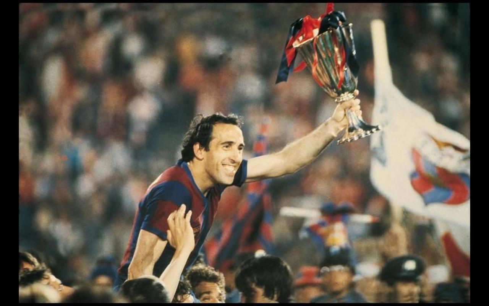
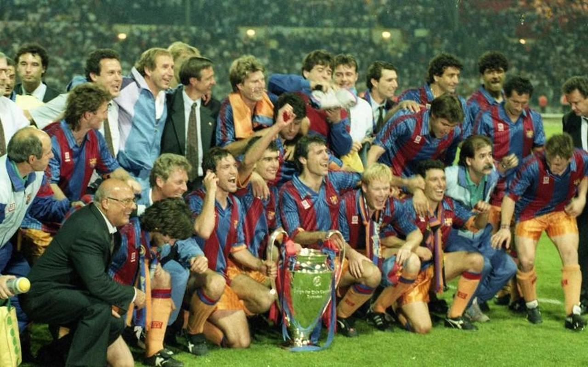
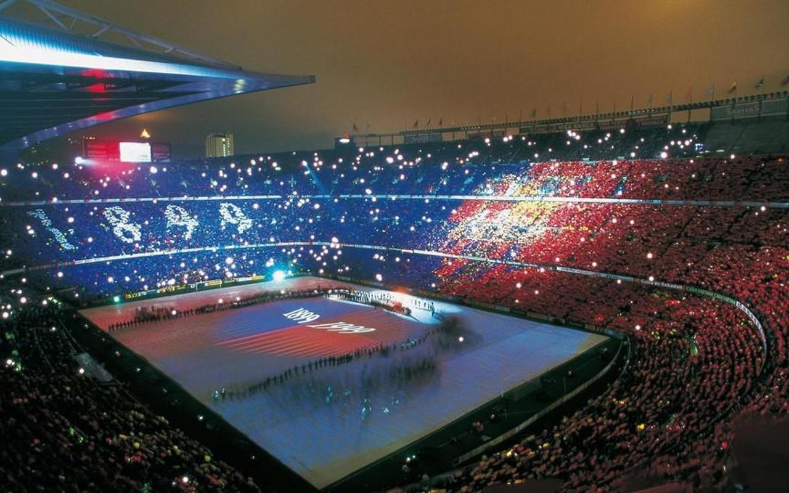
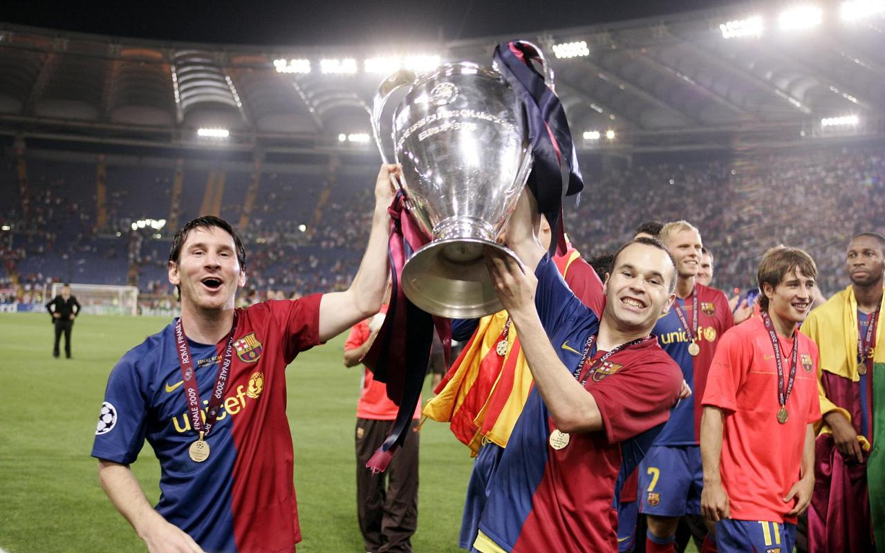

| |
|
|
|

|
Inicio |
Partidos |
Historia |
Equipo |
Junta Directiva |
Datos Generales |
HISTORIAFútbol Club Barcelona |
    |
1978-88 Más socios, más estrellas Llegan futbolistas de ensueño, como ahora Maradona, Schuster o Quini, y surgen los primeros contratos multimillonarios y los derechos de televisión La histórica victoria en Basilea en mayo del 1979, en la que el Barça conquistó por primera vez la Recopa de Europa, supuso el regreso del FC Barcelona a los primeros puestos de los grandes clubes mundiales. Era el primer gran triunfo de la era presidencial de Josep Lluís Núñez. Durante la década de los ochenta el FC Barcelona alternó alegrías y decepciones, unos sentimientos marcados por los resultados deportivos, el rendimiento de los grandes fichajes y otros asuntos extradeportivos. Fueron años de llegadas de futbolistas de sueño (Maradona, Schuster, Alexanco, Quini, Julio Alberto, Urruti, Marcos, etc.) y de entrenadores con maneras diferentes de ver el fútbol (Helenio Herrera, Lattek, Menotti, Venables, etc.). 1988-96 La era del 'Dream Team' El FC Barcelona gana su primera Copa de Europa en 1992 A partir de 1988, con Johan Cruyff como entrenador, volvieron el buen fútbol y los éxitos deportivos. La directiva que presidía Joep Lliís Núñez apostó por una serie de futbolistas que aportaron ilusión y espectáculo y que volvieron a llenar el Camp Nou. El FC Barcelona consiguió encarrilar cuatro campeonatos de Liga consecutivos entre 1990 y 1994. La conquista de la Copa de Europa en 1992 marcó el punto culminante de esta etapa, recordada por el juego de toque, el afán ofensivo y el espíritu ganador de los jugadores de Cruyff. Bautizado como el Dream Team del fútbol europeo, fue un equipo con nombres inolvidables, nombres que han hecho historia: Zubizarreta, Bakero, Begiristain, Laudrup, Koeman, Stoichkov, Romario, Eusebio, Navidad, Guardiola, Amor, Juan Carlos, Ferrer, Nando, Julio Salinas, Serna, Alexanco y Goikoetxea. 1996-08 Un club centenario Los actos conmemorativos fueron una fiesta de barcelonismo, un recorrido emotivo por la historia del Club que se celebró durante todo el año Son pocas las entidades que consiguen convertirse en centenarias, pocas las que consiguen esta constancia y continuidad. El Centenario quería ser el punto de enlace entre un pasado glorioso y un futuro lleno de ilusiones. Los actos conmemorativos fueron un estallido de barcelonismo, un recorrido emotivo por la historia del Club que se festejó durante todo el año. Participaron varias personalidades destacadas de la cultura catalana, y se implicaron entidades y medios de comunicación. El reconocido artista Antoni Tàpies hizo el cartel oficial del Centenario, y se sumó así a la obra de otros artistas y escritores de prestigio internacional que han colaborado a agrandar el universo simbólico del FC Barcelona. La temporada 1998/99, coincidiendo con la celebración del Centenario, se convirtió histórica también por los éxitos deportivos: las cuatro secciones profesionales del Club -fútbol, baloncesto, balonmano y hockey patines ganaron el título de Liga. 2008-18 Los mejores éxitos deportivos de la historia El FC Barcelona maravilla al mundo con un estilo de juego que hace las delicias de cualquier aficionado al fútbol. Se ganan cuatro Ligas de Campeones en una década hegemónica para el conjunto barcelonista A partir de la temporada 2008/09, bajo la dirección de Josep Guardiola el equipo tomó nuevas energías. Siguiendo el estilo que había iniciado Cruyff, Guardiola fue un firme defensor del modelo deportivo de la cantera y contó desde el comienzo con estos jóvenes jugadores para formar su equipo, que resultó el mejor de la historia del Barça. La triple nominación al FIFA Balón de Oro 2010 de Xavi, Iniesta y Messi, tres jugadores formados en la Masia, supuso el reconocimiento internacional de este modelo deportivo que consiste en educar, formar y hacer subir jugadores jóvenes en todas las categorías del Club. Con este equipo se consolida un modelo de éxito que lleva el FC Barcelona a vivir los mejores años de su historia, con la consecución, entre otros títulos, de dos Ligas de Campeones y tres campeonatos de Liga, así como el ansiado Mundial de Clubes, que culminaba en un año, en 2009, en el que el equipo ganó seis títulos, un hito sin precedentes en la historia del fútbol mundial. |


|